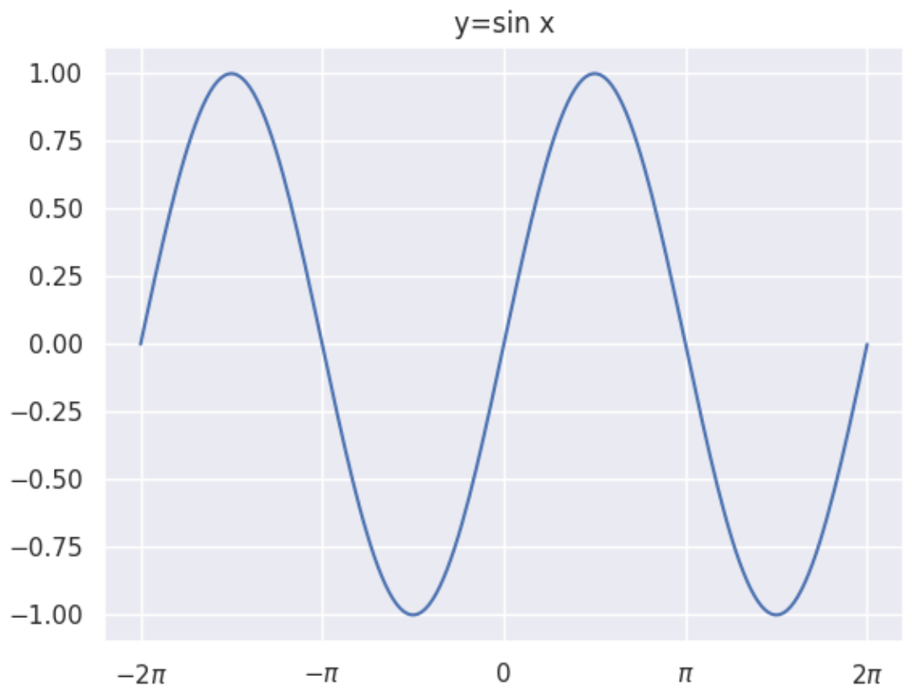
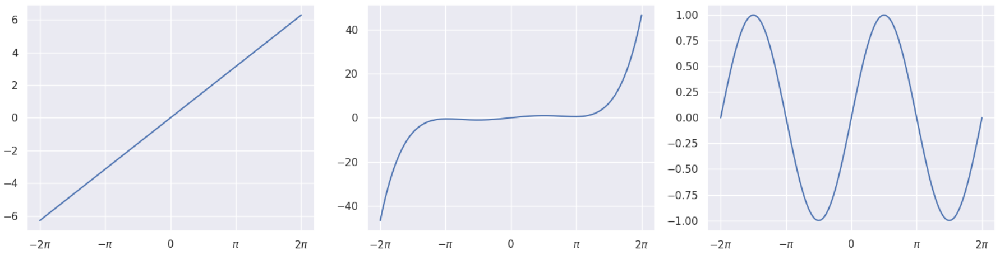
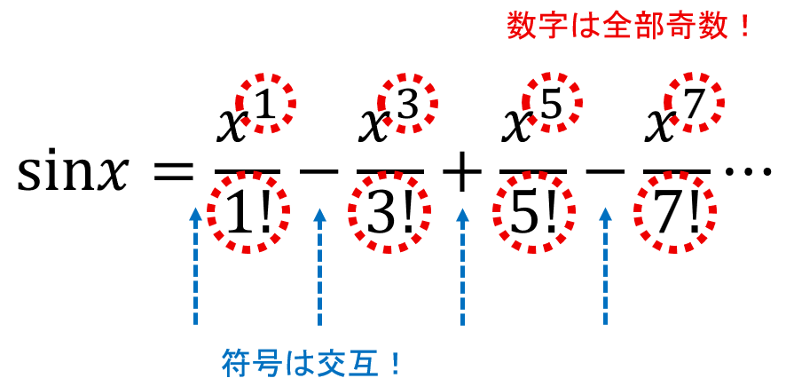
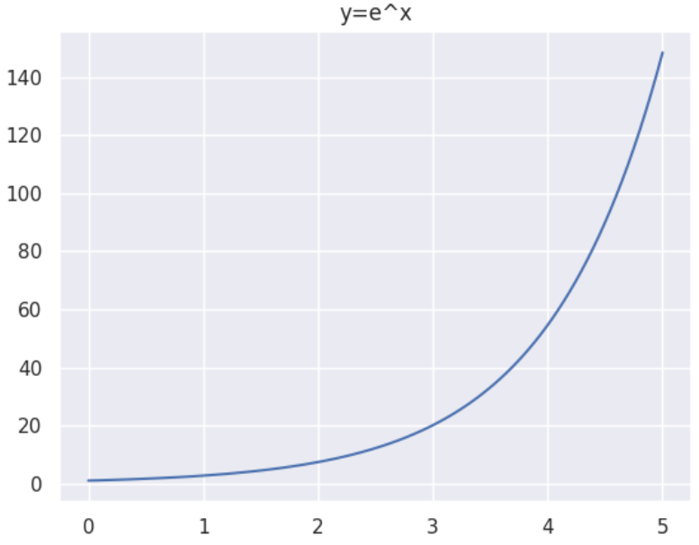

次に左から、\(y=x\)、\(y=x-\dfrac{x^3}{6}+\dfrac{x^5}{120}\)、項を20個足し合わせたグラフの順に描いてみるとこうなります。
右のグラフは、y=sinxのグラフに結構近いですよね！なんでこうなるのを説明するには大学数学の知識が必要なので、今回は割愛！ 覚え方だけお話しておくと…
足し合わせの各項について、xの肩に乗っている数と分母の数は、それぞれ奇数ですね。あとは足し方をプラス→マイナス→プラスと入れ替えるだけでOKです。これを数式で表したものが、最初の数式というわけですね！ （再掲） \[ \sin x = \sum_{m=0}^{\infty} \frac{(-1)^m x^{2m+1}}{(2m+1)!} =\frac{(-1)^0 x^{1}}{1!}+\frac{(-1)^1 x^{3}}{3!}+\frac{(-1)^2 x^{5}}{5!} = x - \frac{x^3}{3!} + \frac{x^5}{5!} - \cdots =x-\frac{x^3}{6}+\frac{x^5}{120}-\cdots \] では続いて。 以前、大切な定数「e」を紹介しました。まああの時はなんかいろいろと説明しましたが、要するに2.718ぐらいの数です！ \(\pi^2\) とか言われたら、「あ～3.14ぐらいの数を2回かけるのね」となりますよね。あれと同じように「e」も扱えます。\(e^2\) も \(e^3\) も…\(e^x\) もです。 この\(y=e^x\)（\(x\)の値が決まると\(y\)の値も決まりますよね）という関数を、指数関数と言います。グラフにするとこんな感じです。
「ん？\(e^{1.5}\) とかはどう考えるの？」と思った方！鋭い！すごく解説したいんだけど、長くなるからいったん飛ばしましょう。 指数関数もマクローリン展開ができます。さっきの\(\sin x\)よりも、はるかに覚えやすいですよ！ \[ e^x = \sum_{k=0}^{\infty} \frac{x^k}{k!} =\frac{x^{0}}{0!}+\frac{x^{1}}{1!}+\frac{x^{2}}{2!}+\frac{x^{3}}{3!}+\cdots =1+\frac{x^1}{1!}+\frac{x^2}{2!}+\frac{x^3}{3!} = 1 + x + \frac{x^2}{2} + \frac{x^3}{6} + \cdots \] ちょっと確認してみましょうか。\(x = 1\) を代入します。つまり、今のマクローリン展開の式のxのところを1としてみます。 \[ e = 1 + 1 + \frac{1}{2!} + \frac{1}{3!} + \cdots \] だそうです。実際に足してみましょう。 \[ 1 + 1 = 2 \] \[ 1 + 1 + \frac{1}{2} = 2.5 \] \[ 1 + 1 + \frac{1}{2} + \frac{1}{6} = 2.666666\ldots \] これを無限の彼方まで足し合わせていくわけですが、その足し算の結果というのが、2.718…ぐらいの値に落ち着くわけですね。ここで言っていることは、以前の記事に書いたeの定義と全く同じです。 （注）No.37で書いた式 \[ e = 1 + \frac{1}{1} + \frac{1}{2} + \frac{1}{6} + \frac{1}{24} + \frac{1}{120} + \cdots \] マクローリン展開ってそもそも高校数学の範囲をガッツリ超えているんですが、式の形を眺めるだけでも面白いと思います。だって、sinxにしろe^xにしろ、多項式でいろんな値を記述できちゃうんですもん！ たとえばsin(10)の値を知りたいと思ったとしましょうか。それってどれくらいの値なのかと言うと、 \[ \sin 10 = \sum_{m=0}^{\infty} \frac{(-1)^m 10^{2m+1}}{(2m+1)!} \] こんな風に書けてしまうわけです！…いやsin(10)が嬉しいかどうかと言われたら別に嬉しくはないんですけど、そうじゃなくて！数学的にものすごく価値のある変形が、このマクローリン展開なんです。数学って深い！